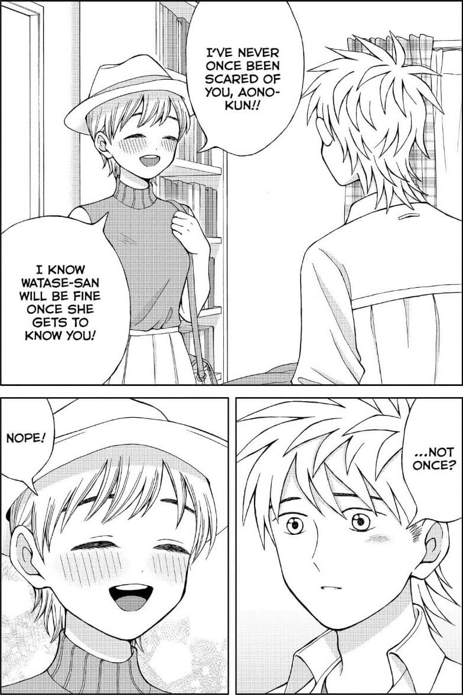
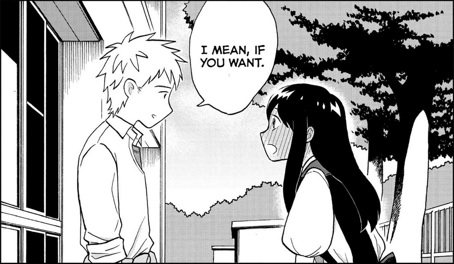
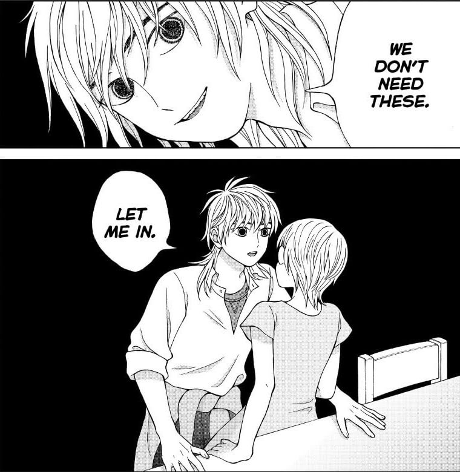

I Want to Hold Aono-kun so Badly I Could Die is a horror-romance manga created by Umi Shina
Yuri Kariya is an airhead who falls head-over-heels in love with Ryuhei Aono after their very first meeting. Yuri's happiness knows no bounds when Aono surprisingly ends up agreeing to go out with her, and thus she starts to enjoy her perfect relationship with her perfect boyfriend. Alas, misfortune strikes when only two weeks into their relationship, Aono tragically dies in a car accident. But is something as simple as death really enough to keep the two lovers apart?
Aono-kun ni Sawaritai kara Shinitai follows the daily lives of these sweethearts, telling a heartwarming love story of two souls going beyond life and death.
Suicide Ideation
Child Abuse and Neglect
Child Death
Themes of Sexual Assault*
* To clarify: the body language and threats made by the Evil Spirit version of Aono are meant to be an allegory for a sexually abusive relationship.
This has to be the best manga I discovered in 2021. I’ve seen it described as “horror disguising itself as a romance” but in my opinion, it plays both genres straight and treats them both respectfully. I was never under the impression that the author is making fun of romcoms. The sweeter moments between Yuri and Aono would not be out of place in a manga that was purely romance.
Just a normal girl and her ghost boyfriend!
Aono-kun has some of the most interesting art and compositions I’ve seen in graphic novels. The art style evolves very quickly throughout the first volume, and then settles on a cutesy and bubbly style, similar to Princess Jellyfish or Mawaru Penguindrum. My theory is that the art in the first few chapters is intentionally drawn below the artist’s level of talent, to give it the impression of an amateur webcomic. Once the main conflict – Aono becoming an evil spirit – is introduced, the art improves to signal that this isn’t a satire.
gotta love that chapter 1 sidemouth
I wish I could own this physically. I'm even tempted to order the og Japanese copies. I've reread the series so many times, I could probably recognize the story even without the translation. I think holding it in my hands and having to physically turn the pages would elevate the experience. The author is amazing at paneling. I read it on my eReader but I imagine reading it in book form would be a similar experience to House of Leaves - I wouldn't call the sudden format changes "jumpscares" but they are unsettling.
I'm obsessed with the style shift whenever Evil Spirit!Aono shows up
I don't want to repost too many pages and ruin the surprise for new readers, so if this sounds even a tiny bit interesting, I urge you to pick it up! Everyone I've introduced it to ending up reading what's available in one sitting. It's that gripping. Also there's like 6 Aono fans on the entire internet and I need to spread the agenda.